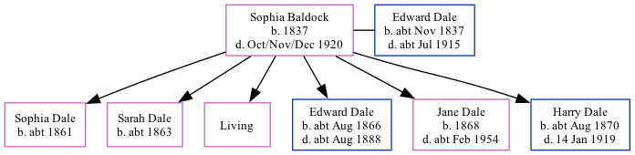

Sophia Dale (née Baldock) 1837 - 1920
[ Home ] | [ Calendar ] | [ Surnames Index ] | [ Family History ]Sophia Baldock, the wife of Edward Dale (the three times great-uncle of Nigel Horne), was born in Chartham, Kent, England in 18371,2,3,4,5,6,7,8,9,10,11,12 and married Edward (a bricklayer's laborer with whom she had 6 children: Sophia, Sarah A, Ann Rebecca, Edward, Jane Elizabeth and Harry Edgar, along with 1 surviving child) at St Gregory, Canterbury, Kent, England on Sep 22, 186013.
Sophia spent all of her life in Kent, England. Throughout her life, she lived in several places around the county: in Chilham, Kent, England in 18511; at her birthplace in 18612; at Maygers Row in Chartham on Apr 7, 18613; at Modern Cottages, Wincheap Street, Thanington on Apr 2, 187115; at Sturry Road in Canterbury on Apr 3, 18816; in Canterbury in 18917 and in 19018; at Sturry Road in Canterbury on Mar 31, 19019; and at Lion Cottages, Sturry Road in Canterbury on Apr 2, 191114.
She died in Oct/nov/dec 1920 in Canterbury11.
Children
- Sophia was born c. 1861
- Sarah A was born c. 1863
- Edward was born c. Aug 1866
- Jane Elizabeth was born in 1868
- Harry Edgar was born c. Aug 1870
Citations
- 1851 England Census Online publication - Provo, UT, USA: The Generations Network, Inc., 2005.Original data - Census Returns of England and Wales, 1851. Kew, Surrey, England: The National Archives of the UK (TNA): Public Record Office (PRO), 1851. Data imaged from the National
- 1861 England Census Online publication - Provo, UT, USA: The Generations Network, Inc., 2005.Original data - Census Returns of England and Wales, 1861. Kew, Surrey, England: The National Archives of the UK (TNA): Public Record Office (PRO), 1861. Data imaged from the National
- 1861 England, Wales & Scotland Census - Findmypast (was age 24 and the wife of the head of the household)
- 1871 England Census Online publication - Provo, UT, USA: The Generations Network, Inc., 2004.Original data - Census Returns of England and Wales, 1871. Kew, Surrey, England: The National Archives of the UK (TNA): Public Record Office (PRO), 1871. Data imaged from the National
- 1881 England Census Online publication - Provo, UT, USA: The Generations Network, Inc., 2004. 1881 British Isles Census Index provided by The Church of Jesus Christ of Latter-day Saints © Copyright 1999 Intellectual Reserve, Inc. All rights reserved. All use is subject to the
- 1881 England, Wales & Scotland Census - Findmypast (was age 44 and the wife of the head of the household)
- 1891 England Census Online publication - Provo, UT, USA: The Generations Network, Inc., 2005.Original data - Census Returns of England and Wales, 1891. Kew, Surrey, England: The National Archives of the UK (TNA): Public Record Office (PRO), 1891. Data imaged from The National
- 1901 England Census Online publication - Provo, UT, USA: The Generations Network, Inc., 2005.Original data - Census Returns of England and Wales, 1901. Kew, Surrey, England: The National Archives of the UK (TNA): Public Record Office (PRO), 1901. Data imaged from the National
- 1901 England, Wales & Scotland Census - Findmypast (was age 64 and the wife of the head of the household)
- 1911 England Census Online publication - Provo, UT, USA: Ancestry.com Operations, Inc., 2011.Original data - Census Returns of England and Wales, 1911. Kew, Surrey, England: The National Archives of the UK (TNA), 1911. Data imaged from the National Archives, London, England.
- England & Wales, Death Index: 1984-2005 Online publication - Provo, UT, USA: The Generations Network, Inc., 2007.Original data - General Register Office. England and Wales Civil Registration Indexes. London, England: General Register Office. © Crown copyright. Published by permission of the Cont
- England & Wales, FreeBMD Birth Index, 1837-1915 Online publication - Provo, UT, USA: The Generations Network, Inc., 2006.Original data - General Register Office. England and Wales Civil Registration Indexes. London, England: General Register Office. © Crown copyright. Published by permission of the Cont
- England & Wales Marriages 1837-2005 - Findmypast
- 1911 Census for England & Wales - Findmypast (was age 74 and the wife of the head of the household)
- 1871 England, Wales & Scotland Census - Findmypast (was age 34 and the wife of the head of the household)
Media
1901 England, Wales & Scotland Census - GBC/1901/0005476333
Family Tree
Generated by ged2site. Last updated on Nov 13, 2024